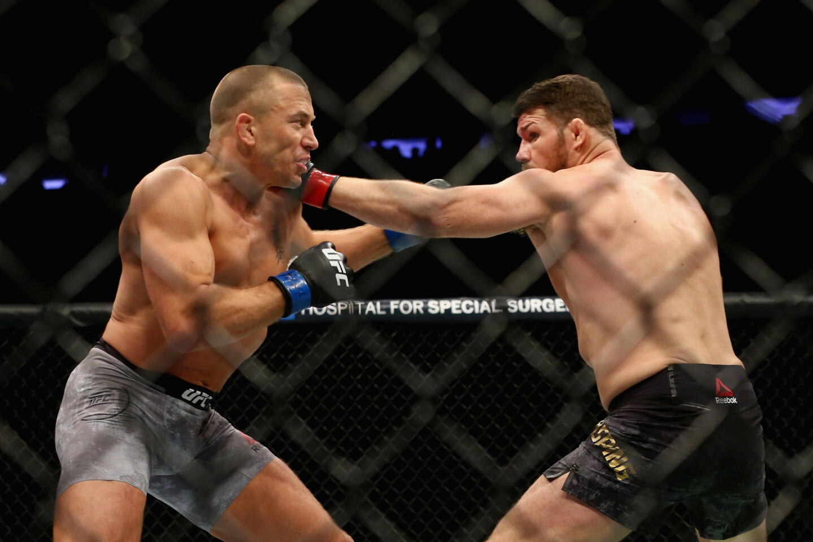
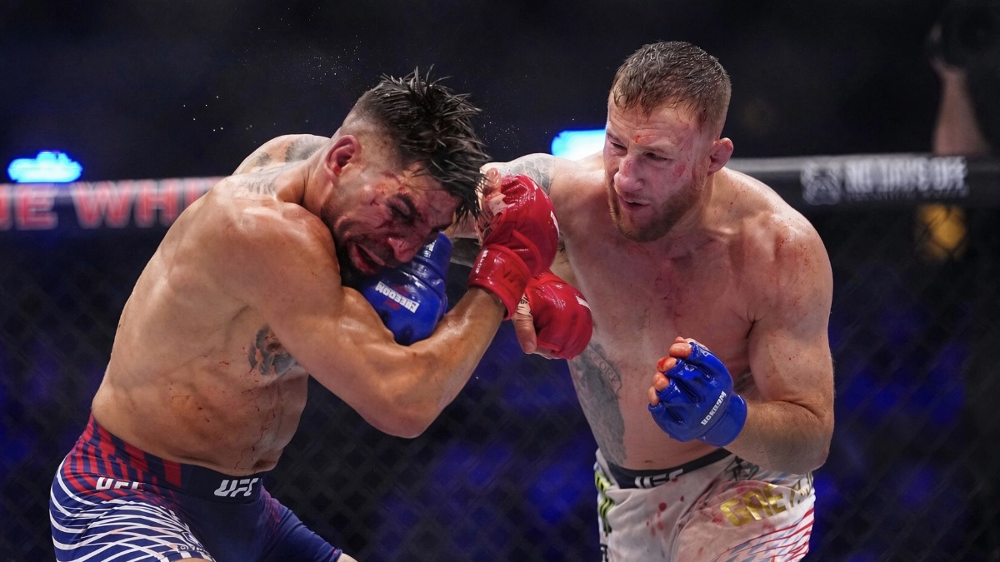

Les combats légendaires
Chronologie des affrontements qui ont marqué l'histoire de l'octogone

Georges Saint-Pierre vs. Michael Bisping
Quatre ans après sa retraite, GSP fait un retour historique au Madison Square Garden et monte d'une catégorie pour défier le champion Michael Bisping. Au terme d'un duel acharné et sanglant, il envoie Bisping au tapis d'un crochet du gauche avant de l'endormir sur un étranglement arrière au 3e round (4:23), devenant double champion.

Khabib Nurmagomedov vs. Conor McGregor
Plus grand événement médiatique de l'histoire de l'UFC, ce duel conclut une rivalité personnelle hors norme. Khabib étouffe méthodiquement McGregor au sol, le fait vaciller debout au 2e round, et le force à abandonner sur une clé de mâchoire au 4e round avant qu'une bagarre générale n'éclate hors de la cage.

Charles Oliveira vs. Michael Chandler
Disputé pour le titre vacant des poids légers, ce combat couronne plus de dix ans de carrière à l'UFC pour Charles Oliveira. Sévèrement touché au 1er round et au bord de la défaite, le Brésilien survit miraculeusement et met Chandler KO d'un crochet du gauche dès l'entame du 2e round (0:19).

Max Holloway vs. Justin Gaethje
Après avoir dominé les quatre premiers rounds avec une précision chirurgicale, Holloway refuse la victoire facile aux points. À dix secondes de la fin, il pointe le centre de l'octogone du doigt pour inviter Gaethje à un échange pur et le met KO à une seconde du gong final (4:59 du 5e round).

Justin Gaethje vs. Ilia Topuria
Disputé lors de l'événement historique sur la pelouse de la Maison-Blanche pour le titre des poids légers, ce combat offre un retournement de situation spectaculaire. Dominé dans les deux premiers rounds, Gaethje renverse la vapeur dès la 3e reprise et force le coin de Topuria à jeter l'éponge avant le 5e round.